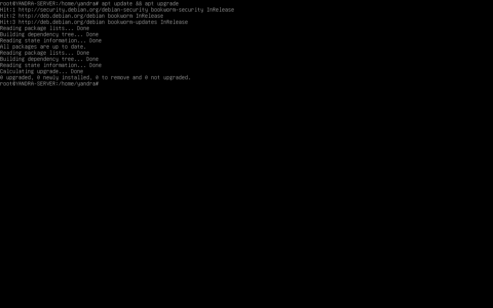

INSTALASI FTP SERVER PADA VIRTUAL BOX
1. UPDATE & UPGRADE Package Server
1.1 Install package FTP server
apt install vsftpd
1.2 Konfigurasi FTP server
nano /etc/vsftpd.conf
Ubah atau aktifkan konfigurasi berikut:
anonymous_enable=YES anon_root=/home/ftp write_enable=YES anon_upload_enable=YES anon_mkdir_write_enable=YES anon_other_write_enable=YES
Pastikan untuk menghapus tanda # agar opsi aktif.
1.3 Restart FTP server
systemctl restart vsftpd systemctl status vsftpd
Status harus RUNNING jika berhasil.
1.4 Buat folder untuk berbagi file
mkdir -p /home/ftp/tempat_berbagi chmod 777 /home/ftp/tempat_berbagi chown ftp:ftp /home/ftp/tempat_berbagi
1.5 Coba akses FTP Server
Buka File Manager dan masukkan alamat:
ftp://192.168.1.1
1.6 User Verifikasi
Saat diminta login:
- Centang opsi Anonymous
- Email bebas (tidak berpengaruh)
1.7 Tambahkan file ke FTP
Jika berhasil masuk, coba upload file ke direktori FTP yang sudah dibuat.
1.8 Cek file pada server
cd /home/ftp/tempat_berbagi ls
Jika file muncul, maka konfigurasi FTP Server berhasil.